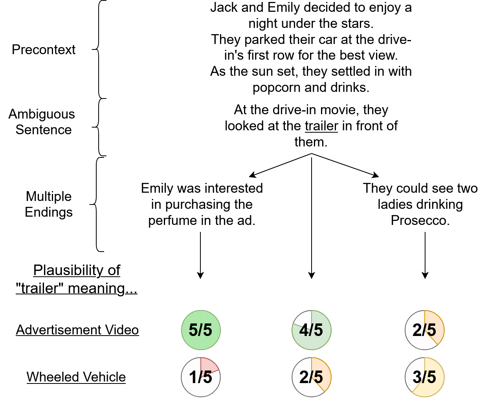

Task Overview

Word Sense Disambiguation tasks commonly assume one word sense to be the 'correct' one, but that is not necessarily reflective of reality. Ambiguities, underspecification and personal opinions can influence which word senses one finds plausible in a given context, and there is a difference between the intuition of humans and the predictions of computational models. To study and benchmark this phenomenon, we introduce the AmbiStory dataset, a dataset of 5-sentence short stories. The task is to disambiguate a target homonym in the fourth sentence through contextual clues in surrounding sentences.
Our stories consist of three parts: A precontext, consisting of three sentences that ground the story, an ambiguous sentence, containing a homonym that causes it to have two widely different plausible interpretations, and optionally one of two endings, which often imply a specific word sense of the homonym.
We asked Prolific participants to rate the plausibility of a given word sense in the context of a story on a scale from 1 to 5. We collect at least five ratings for each sense/story sample. Since each story setup has either one of two endings or none at all, and we focus on two word senses per homonym, we obtain six annotation samples per setup.